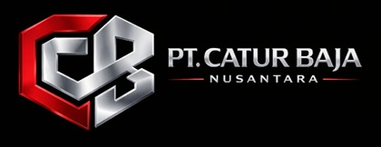
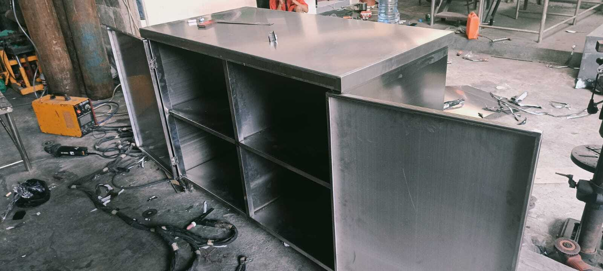
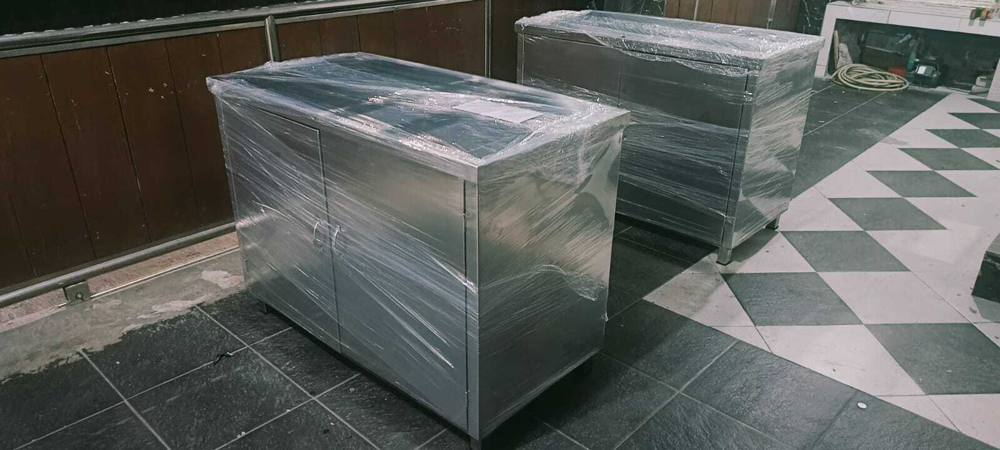
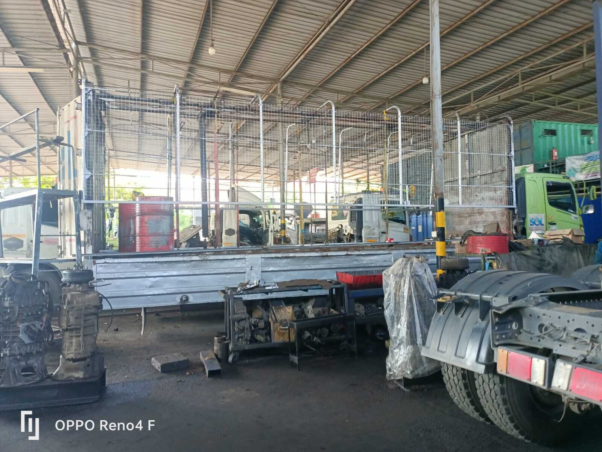
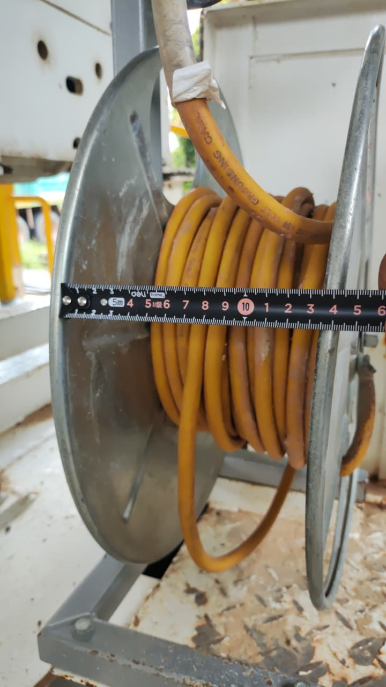
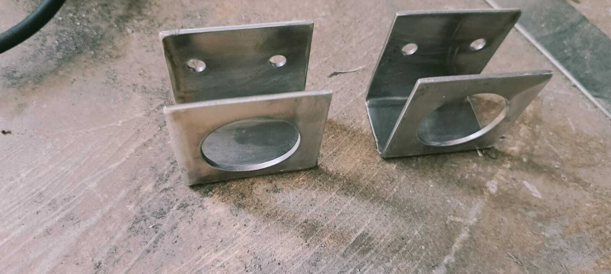

Spesialis Fabrikasi Karoseri, PJU & Konstruksi Baja
Kami melayani kebutuhan industri dengan kualitas tinggi dan harga kompetitif
Konsultasi SekarangPT Catur Baja Nusantara adalah perusahaan yang bergerak di bidang fabrikasi logam dan konstruksi baja. Kami berpengalaman dalam pembuatan tangki, tiang PJU, serta berbagai kebutuhan industri lainnya.

Pembuatan tangki berbagai kapasitas sesuai kebutuhan proyek.

Produksi tiang lampu jalan standar proyek pemerintah & swasta.

Layanan cutting presisi tinggi dan hasil rapi.

Pengerjaan bending berbagai jenis material dengan akurat.

Melayani berbagai kebutuhan fabrikasi sesuai desain.
Alamat: Mekar Bakti Panongan Kabupaten Tangerang Prov Banten
WhatsApp: 089519275110
Hubungi Kami